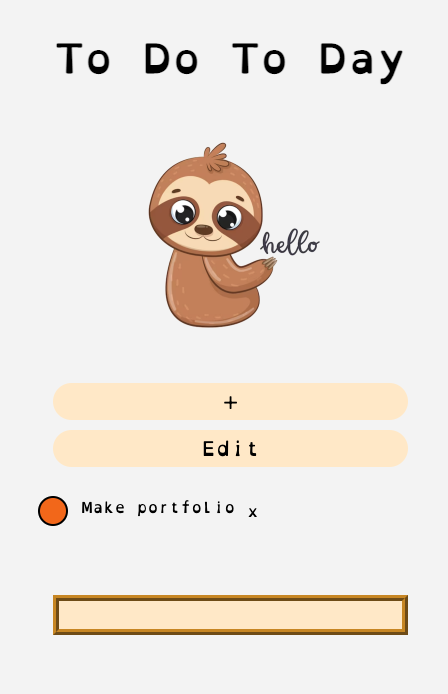
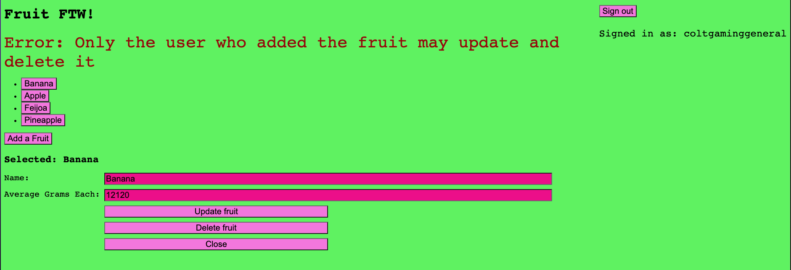
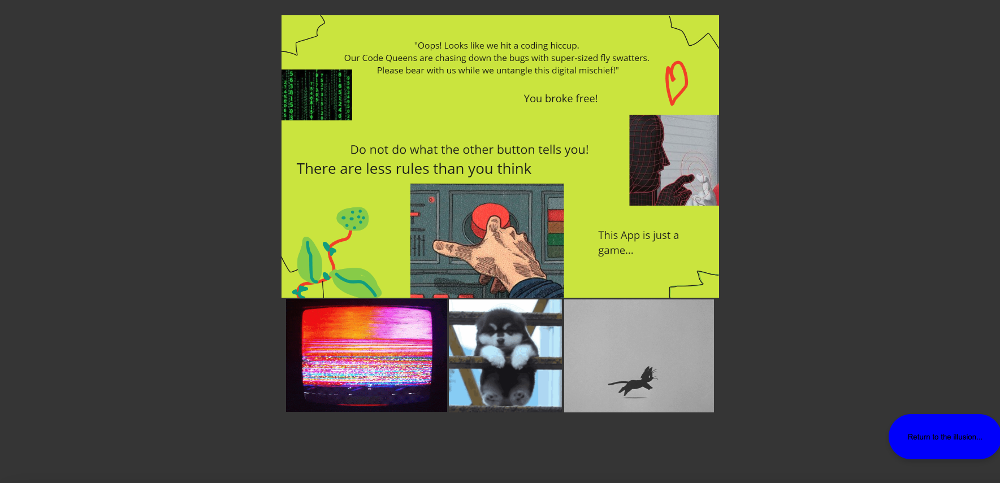
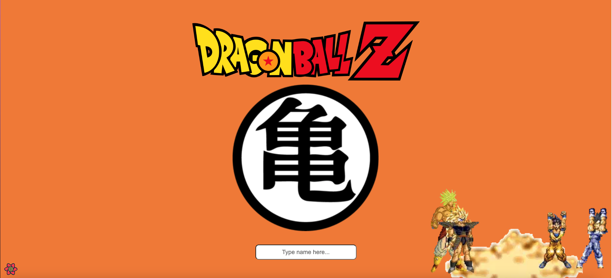

| Main talk |
|---|
| To Do Today |
| Auth0 sign in |
| Error Page |
| Dragon Ball |
| My cv |
| about me |
This is a short portfolio where I post a little about the projects I have either done fully alone or worked on with others. (this is a constant work in progress and will have more things added regularly)
This was a project I worked in a group of 4 to make as our final project at dev academy, it used react typescript, has log in and log out features, and is completely unique what each person sees, we implimented alot of features into this project and resolved alot of conflict along the way. We made this for people who forget what they need to do as a little checklist for what do to and whats going on, we also did a presientation on this that you can watch if you would like to.The image below can also be clicked to take you to this project, well at least the version that was not completely finished, and was presented, I have since done some accessibilty improvements.
This was a project I worked on solo, this was never deployed but was a huge part of my learning journey, this taught me how to make things only avalible to people signed in and was used heavily in the to do today project.
This was a part of another project but I wanted to include it here, an error page that things get reddirected to if there is an error.
This was a project a group of 5 of us challenged each other with, after learning some basics of API's, I set up a random number generater with a maximum to be between the two strongest characters, and than on the next page it would show you, your randomly generated power and all a table the charaters you could beat at this power level in one table and all one of the charaters you could not in another, I am typing this out over a month after working on this project so I can not recall all the finer details, like who's stronger than who or what a good power level looked like.
I have recently graduated from Dev Academy which was a 15 week intense bootcamp course. During this course it allowed me to learn new skills as well as further develop the skills I already knew. Dev Academy also encouraged working on personal projects and group projects with class mates during the course which allowed me develop different ways to work in a team and find ways to self improve. Some skills that I have obtained is the knowledge on how to work with typescript, javascript, html, css, node and react, as well as many other things.